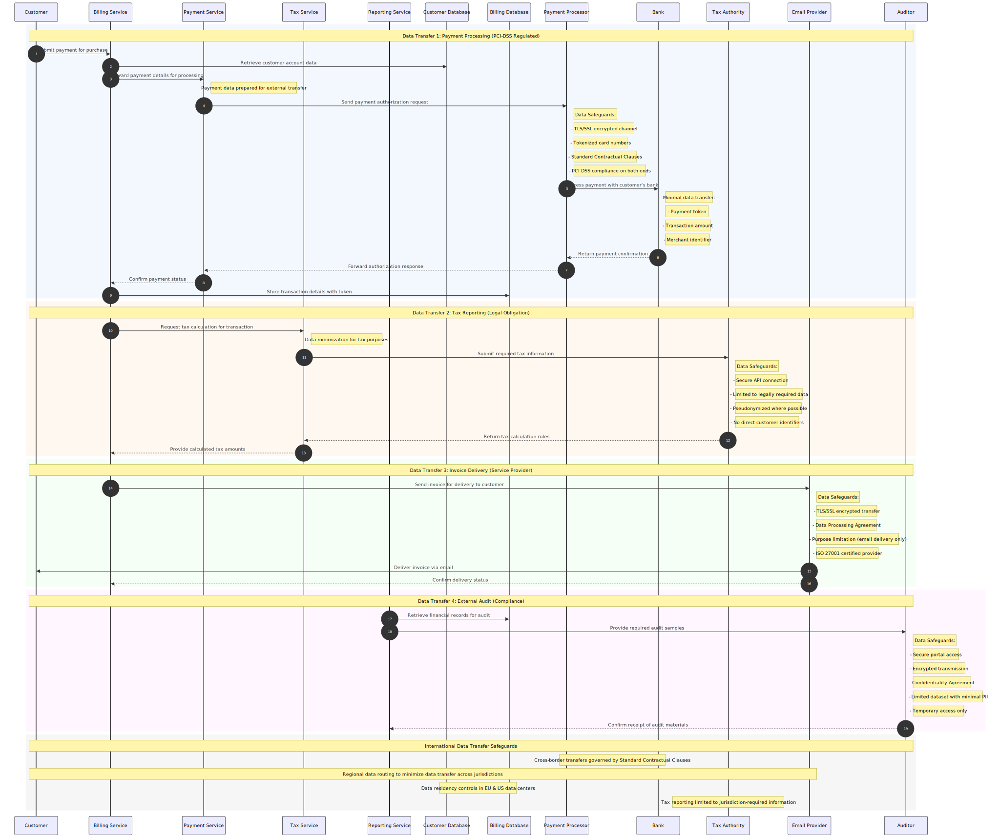

Commerce Financial Platforms (CFP) - External Data Sharing Flow
This diagram focuses on data transfers across trust boundaries, particularly when personal data leaves Microsoft's Commerce Financial Platforms system and is shared with third parties.
flowchart LR
%% Define styles
classDef microsoftSystem fill:#bbf,stroke:#333,stroke-width:1px
classDef thirdPartySystem fill:#f9f,stroke:#333,stroke-width:2px
classDef datastore fill:#dfd,stroke:#333,stroke-width:1px,shape:cylinder
classDef sensitiveFlow fill:#fcb,stroke:#f66,stroke-width:2px
classDef legalFlow fill:#cff,stroke:#399,stroke-width:1px
%% Microsoft Systems
BillingService["Billing Service"]:::microsoftSystem
PaymentService["Payment Processing Service"]:::microsoftSystem
TaxService["Tax Calculation Service"]:::microsoftSystem
ReportingService["Financial Reporting"]:::microsoftSystem
%% Microsoft Data Stores
CustomerDB[("Customer Database (EU & US Regions)")]:::datastore
BillingDB[("Billing Database (EU & US Regions)")]:::datastore
%% External Third Parties
PaymentProcessor(["Payment Processor (PCI DSS Compliant)"]):::thirdPartySystem
Bank(["Customer's Bank"]):::thirdPartySystem
TaxAuthority(["Tax Authority"]):::thirdPartySystem
EmailProvider(["Email Service Provider"]):::thirdPartySystem
Auditor(["External Auditor"]):::thirdPartySystem
subgraph MicrosoftBoundary["Microsoft Systems (Internal Trust Boundary)"]
BillingService
PaymentService
TaxService
ReportingService
CustomerDB
BillingDB
end
%% Cross-boundary data flows
%% Payment processing flows
PaymentService -->|"Payment authorization request: Card details (tokenized), Amount, currency [via TLS/SSL, encrypted] [Standard Contractual Clauses]"| PaymentProcessor:::sensitiveFlow
PaymentProcessor -->|"Authorization response: Approval code, Token reference [via TLS/SSL]"| PaymentService
PaymentProcessor -->|"Transaction processing: Payment token, Amount [via secure gateway]"| Bank:::sensitiveFlow
Bank -->|"Payment confirmation: Transaction ID, Status code [via secure gateway]"| PaymentProcessor
%% Tax authority flows
TaxService -->|"Tax reporting data: Transaction amounts, Location information, Business category [via secure API, as legally required] [No customer identifiers]"| TaxAuthority:::legalFlow
TaxAuthority -->|"Tax calculation rules: Rate tables, Jurisdiction codes [via API]"| TaxService
%% Customer communication flows
BillingService -->|"Email content: Customer name, email, Invoice details [via TLS/SSL] [Data Processing Agreement]"| EmailProvider
EmailProvider -->|"Delivery status: Delivery confirmations, Bounce notifications [via API]"| BillingService
%% Audit and compliance flows
ReportingService -->|"Audit records: Transaction samples, Financial summaries, Limited customer data [via secure portal, encrypted] [Confidentiality Agreement]"| Auditor:::legalFlow
%% Data source connections (internal)
CustomerDB -->|"Customer account data"| BillingService
BillingDB -->|"Transaction history"| BillingService
BillingService -->|"Store payment tokens"| BillingDB
BillingService -->|"Update customer records"| CustomerDB
BillingDB -->|"Financial data"| ReportingService
BillingService -->|"Transaction details"| TaxService
PaymentService -->|"Payment records"| BillingService
%% Trust boundary annotations
PaymentProcessor -.->|"PCI DSS & ISO 27001 compliant environment"| PaymentProcessor
Bank -.->|"Financial institution security controls"| Bank
TaxAuthority -.->|"Government security framework"| TaxAuthority
EmailProvider -.->|"ISO 27001 certified service provider"| EmailProvider
#
Cross-Boundary Data Transfer Sequence
This sequence diagram illustrates the chronological flow of personal data across trust boundaries, highlighting the specific security and contractual safeguards in place.

#
Legend
This external data sharing flow diagram illustrates:
1. Trust Boundaries: Clear delineation between Microsoft systems and external parties
2. Data Categories: The specific personal data elements that cross boundaries
3. Legal Basis: Identifying flows that occur due to legal/regulatory requirements
4. Security Measures: Encryption, secure protocols, and authentication methods
5. Contractual Safeguards: References to data protection agreements in place
#
Key Data Protection Elements:
- Standard Contractual Clauses (SCCs) govern data transfers to payment processors
- Data Processing Agreements are in place with service providers like email delivery services
- Only necessary data crosses trust boundaries (data minimization principle)
- Sensitive payment data is tokenized before sharing with third parties
- Tax reporting data excludes direct customer identifiers where possible
- All cross-boundary transfers use encryption and secure protocols
#
Third-Party Sharing Controls
Microsoft's Commerce Financial Platform implements strict controls for sharing personal data:
1. Legal Basis: Each external data transfer has a specific legal basis (contract performance, legal obligation, or legitimate interest)
2. Purpose Limitation: Data is shared only for specified, explicit purposes
3. Contractual Protection: Formal agreements (SCCs, DPAs) establish recipient obligations
4. Data Minimization: Only necessary data elements are shared, with minimized identifiers
5. Technical Safeguards: Encryption, secure transfer protocols, and access controls protect data in transit
6. Compliance Verification: Third-party security certifications (PCI-DSS, ISO 27001) and audits verify recipient safeguards